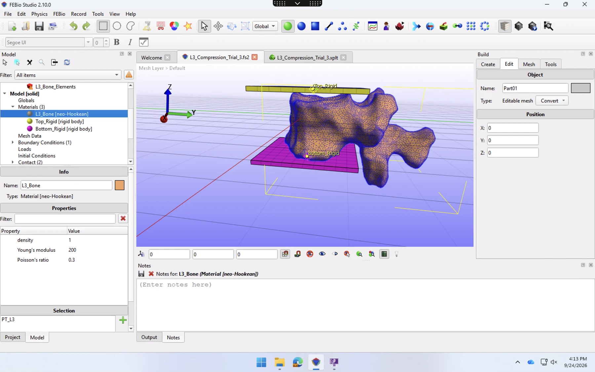
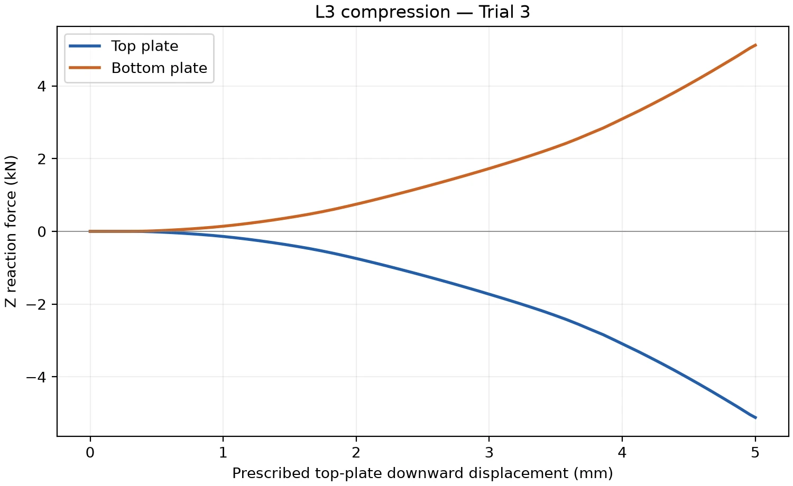
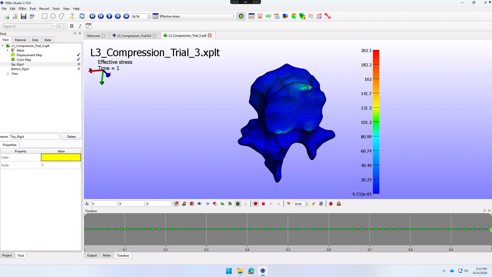

Keep the surface exercise separate from the solved volume model.
This coursework followed an L3 vertebra from MRI segmentation through meshing and compression analysis. I reviewed the segmentation in three anatomical planes and produced a smoothed three-dimensional mask.
The STL was also used for a separate TetGen meshing exercise. The final compression analysis used the imported Simpleware/Abaqus volume mesh. Those are different meshes; the denser TetGen statistics do not describe the solved model.

Load the vertebral body between two plates.
The bone used homogeneous Neo-Hookean elasticity with E = 200 MPa and ν = 0.3. Separate rigid-body materials represented two 50 × 50 × 2 mm compression plates.
The lower plate was fully fixed. The top plate could translate only vertically, with a prescribed −5 mm displacement. Two local bone nodes restrained lateral movement while leaving vertical displacement free.
Both interfaces used sliding-elastic contact with friction coefficient 0.3. The final configuration assigned bone as primary and the plate face as secondary.


Solver completion and contact quality are separate questions.
The work included an initial increment failure and earlier contact configurations with excessive penetration. Trial 3 used a near-zero residual threshold adjustment and bone-primary contact surfaces, improving enforcement relative to the earlier plate-primary trials.
The final run reached normal termination with 55 accepted increments, 482 equilibrium iterations, 16 warnings, and zero errors. The warnings recorded extra iterations and stiffness reformations before convergence.


Check both sides of the force balance.
At 5 mm prescribed plate travel, the top and bottom reactions were approximately −5,117.72 N and +5,117.65 N. Their sum was about −0.069 N, or 0.00134% of the top reaction magnitude.
That near-balance is useful evidence of equilibrium. It does not establish that the contact behavior, bone material, or predicted stiffness is physically accurate.


Keep the contact limitation visible.
The final coordinate check still found approximately 0.97 mm intrusion into the top plate and 0.39 mm into the bottom plate. A penalty-sensitivity study was not completed, so the force–displacement curve retains that limitation.
The model also used homogeneous material properties, localized lateral restraints, and no fracture criterion. No mesh-convergence study was reported. These outputs document a completed computational exercise, not a validated prediction of vertebral failure.